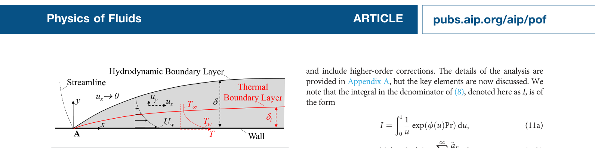
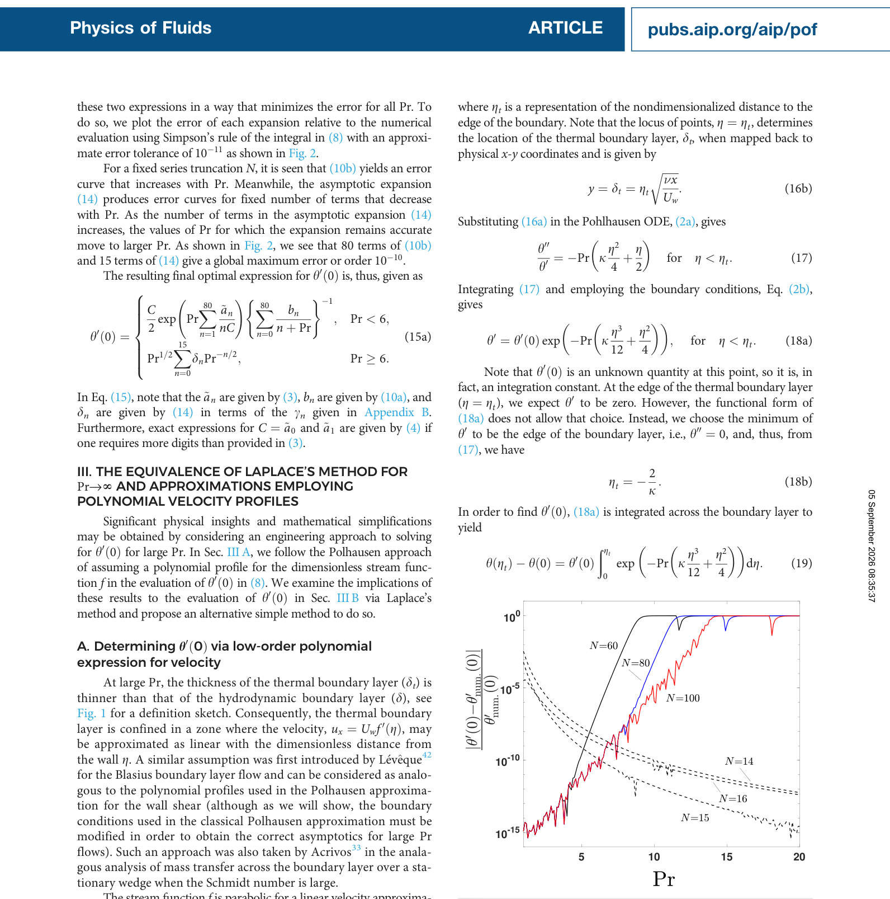
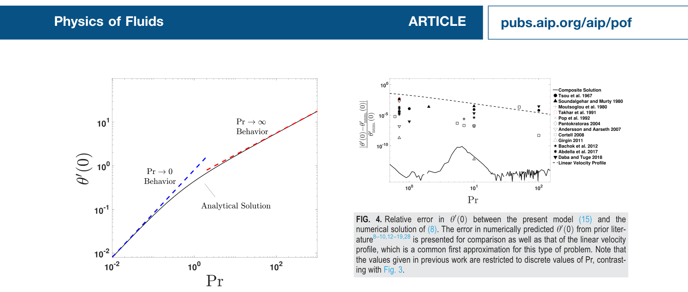
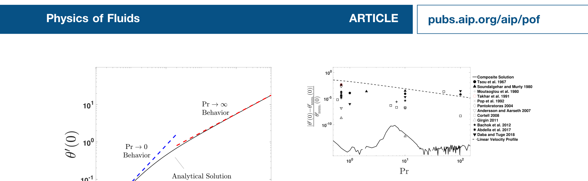

01中文摘要
研究等温运动表面在牛顿流体中诱导的层流边界层对流传热。作者此前已给出Sakiadis边界层水动力精确幂级数解；本文据此建立热边界层精确解，由Prandtl数Pr和局部雷诺数表征。为得到传热系数（无量纲Nusselt数），需壁面温度梯度，而该梯度仅是Pr的函数，可写成精确边界层解的积分。精确解在大Pr下计算不稳定，遂用Laplace方法得到大Pr展开，并构造O(10⁻¹⁰)精度的复合解。幂级数虽发散，但可用于获得渐近展开的各阶修正；结果符合大Pr下热边界层远薄于水动力边界层的图像，适用于任意Pr，使用方便。
原始摘要（英文/原文）
We consider the problem of convective heat transfer across the laminar boundary layer induced by an isothermal moving surface in a Newtonian fluid. In a previous work [Barlow et al., “Exact and explicit analytical solution for the Sakiadis boundary layer,” Phys. Fluids 36, 031703 (2024)], an exact power series solution was provided for the hydrodynamic flow, often referred to as the Sakiadis boundary layer. Here, we utilize this expression to develop an exact solution for the associated thermal boundary layer as characterized by the Prandtl number (Pr) and local Reynolds number along the surface. To extract the location-dependent heat transfer coefficient (expressed in dimensionless form as the Nusselt number), the dimensionless temperature gradient at the wall is required; this gradient is solely a function of Pr and is expressed as an integral of the exact boundary layer flow solution. We find that the exact solution for the temperature gradient is computationally unstable at large Pr, and a large Pr expansion for the temperature gradient is obtained using Laplace's method. A composite solution is obtained, which is accurate to O(10−10). Although divergent, the classical power series solution for the Sakiadis boundary layer—expanded about the wall—may be used to obtain all higher-order corrections in the asymptotic expansion. We show that this result is connected to the physics of large Prandtl number flows where the thickness of the hydrodynamic boundary layer is much larger than that of the thermal boundary layer. The present model is valid for all Prandtl numbers and attractive for ease of use.
02阅读说明
类型：期刊论文（Physics of Fluids 36, 073609, 2024，14页）。材料为14页全文文本与5幅抓取图件；PDF文本层基本完整，但公式中的负号、上下标与希腊字母在OCR中经常丢失或错位（如 κ 的负号、Eq.(14) 的指数、Eq.(21) 的 Gamma 函数），已用原PDF第5–7、12页图像核对。信息完整度高：控制方程、级数递推、渐近展开、系数表、误差图与文献对比齐全；无实验数据。 文章类型：期刊
03一句话核心与三句话摘要
精确级数解与Laplace大Pr渐近拼成复合解，使Sakiadis壁面温度梯度在全Pr内达O(10^-10)精度。
- Sakiadis 边界层伴随的换热问题需要壁面温度梯度 h'(0)，它只依赖 Pr，但既有研究多给出离散 Pr 的数值或半解析值，缺少全 Pr 的显式精确表达。 AI概括
- 本文把 Barlow 等的 Sakiadis 精确幂级数代入热边界层方程，得到 h'(0) 的精确积分与级数表达 (7)、(10b)，并指出该精确解在较大 Pr 下数值不稳定。 原文明确
- 作者用 Laplace 方法导出大 Pr 渐近级数 (13)–(14)，与精确解组成复合解 (15)，在全 Pr 内与数值解相比误差约 O(10^-10)，并证明发散的壁面幂级数可给出全部高阶系数。 原文明确
04核心内容清单
| 要点 | 类型 | 重要性 | 原文依据 | 属性 |
|---|---|---|---|---|
| 热边界层方程 (2a,b) 可积分为 h'(0) 的精确积分表达 (7)，其中只含 Sakiadis 精确解 f 与 Pr。 | 精确解 | A | p3，Sec. II A，Eqs. (2)、(7) | 原文明确 |
| 代入精确级数 (3) 并令 u=e^{-Cη/2} 后，可逐项积分得到精确收敛级数 (10b)，它是 h'(0) 的逐点收敛表示。 | 精确解 | A | p3–4，Eqs. (8)–(10b) | 原文明确 |
| 精确级数 (10b) 的 b_n 递推在双精度下 Pr>12 后病态，精确解在较大 Pr 数值不稳定。 | 数值性质 | A | p4，Sec. II A；p8 结论 | 原文明确 |
| 对 (8) 的分母积分用 Laplace 方法，可得 h'(0) 的大 Pr 渐近级数 (13) 与倒数形式 (14)；系数只依赖 κ。 | 渐近解 | A | p4–5，Eqs. (11)–(14)，Appendix A | 原文明确 |
| 复合解 (15)：Pr<6 用 (10b) 的80项，Pr≥6 用 (14) 的15项；与数值解相比全 Pr 最大误差 O(10^-10)，最大误差在 Pr=6。 | 核心结果 | A | p5–6，Eq. (15)，Fig. 2；p8 结论 | 原文明确 |
| 渐近级数 (13) 是发散的，存在最优截断；15→16 项时某些 Pr 的误差反而增大。 | 渐近性质 | A | p5，Fig. 2 图注；p6 | 原文明确 |
| 大 Pr 渐近系数只含 κ=f''(0)，描述远场衰减的 C 在 c_n 中完全消去，说明壁面附近流动主导渐近行为。 | 机理解释 | A | p5、p7–8，Sec. III C，Appendix B | 原文明确 |
| 壁面处发散的经典幂级数 (C1) 可替代收敛级数 (3)，给出与附录B完全一致的全部高阶系数。 | 替代推导 | A | p7、p12–13，Appendix C | 原文明确 |
| 极限行为：Pr→0 时 h'(0)~CPr/2；Pr→∞ 时 h'(0)~π^{-1/2}Pr^{1/2}。 | 渐近极限 | A | p7–8，Eq. (14)，Fig. 3 | 原文明确 |
| 与 Table I 文献相比，Girgin (2011) 的 h'(0) 最接近本文模型（误差低至 10^-9），因其 κ 与本文一致；κ 误差大的文献 h'(0) 误差也大。 | 文献对比 | A | p8，Sec. III C，Fig. 4，Table I | 原文明确 |
| Pohlhausen 线性速度近似 (16)–(21) 可复现 (13) 倒数展开的前三项（低阶渐近一致）；高阶多项式近似必须采用壁面导出的约束，不能在边界层外缘强加约束。 | 方法学结论 | A | p6–7，Sec. III A–B；p8–9 | 原文明确 |
| 模型限于常物性、二维定常不可压缩层流、等温壁、无粘性耗散/压力梯度；精度是与同一ODE的数值解比较，非实验验证。 | 适用边界 | C | p2–3；全文 | AI概括 |
05引言：研究问题与领域缺口
第1节（p2–4）介绍 Sakiadis 边界层：运动平板穿过静止流体，控制方程与 Blasius 同形但边界条件互换，不能由 Blasius 解平移得到；该流动是涂层、连续片材传热传质的基础。作者回顾 Sakiadis 的数值与 Pohlhausen 近似、后续数值/半解析工作，指出原始论文近五年被引超过1000次。传热方面，Nusselt 数由壁面无量纲温度梯度 h'(0) 决定，而 h'(0) 只依赖 Pr；既有研究（Table I）多在离散 Pr 下给出数值或近似值（0.6、0.7、1、2、5.5、7、10、50、100 等），中间 Pr 需插值，且精度受限。Naghshineh 等给出 Sakiadis 流动的精确幂级数，Barlow 等将其显式化；本文利用该精确解构造任意 Pr 的 h'(0) 解析表达，发现精确解在中等及以上 Pr 数值不稳定，进而用 Laplace 方法做大 Pr 展开，并证明壁面发散的经典幂级数也能给出全部高阶渐近系数（p2–3）。
06流动条件与几何构型
| 项目 | 数值/描述 | 依据 | 备注 |
|---|---|---|---|
| 流动构型 | 二维定常不可压缩层流；等温运动平板穿过静止流体（Sakiadis 边界层） | p2–3，Sec. I–II | |
| 速度边界条件 | f(0)=0；f'(0)=1；f'(∞)=0 | p3，Eq. (1b) | |
| 热边界条件 | h(0)=0；h(∞)=1（等温壁 Tw、远场 T∞） | p3，Eq. (2b) | |
| 物性假设 | 常物性；无粘性耗散、无压力梯度、无体积力 | p2–3，Sec. I–II | 由方程 (1)–(2) 的形式与文中物性假设可得 |
| Prandtl 数范围 | 全 Pr（复合解声称 valid for all Prandtl numbers） | p2 摘要；p6 Eq. (15) | |
| 精确级数适用性 | 双精度下 Pr>12 后病态；Pr<12 可用 (10b) | p4，Sec. II A | |
| 渐近级数适用性 | Pr→∞；发散级数，取最优截断 | p5–6，Eqs. (13)–(14)，Fig. 2 | |
| 复合解切换点 | Pr<6 用 (15a)；Pr≥6 用 (15b) | p6，Eq. (15) | |
| 精确级数截断 | 80项（(10b) 的 b_n 和） | p6，Eq. (15a)；p6 正文 | |
| 渐近级数截断 | 15项（(14) 的 δ_n 和） | p6，Eq. (15b)；Fig. 2 | |
| 数值基准 | 对 (8) 用 Simpson 法，误差容限约 10^-11 | p6，Sec. II C | |
| 壁面剪切参数 κ | κ=f''(0)=−0.443748313368861… | p12，Appendix B | 负号按PDF图像核对；OCR丢失负号 |
| 级数常数 C | C=ã0=1.6161254468…；ã1=−2.131345924047… | p3，Eq. (3c) | |
| Table I 文献 Pr 集合 | 0.6、0.7、1、2、5.5、7、10、50、100（不同作者不等） | p3–4，Table I | 各文献仅覆盖其中部分Pr |
| 精度指标 | 全 Pr 最大误差 O(10^-10)；最大误差在 Pr=6；Girgin 文献对比误差低至 10^-9 | p8，Fig. 4；p8 结论 |
07核心现象与关键参数
| 参数 | 定义 | 数值 | 关系/说明 | 依据 |
|---|---|---|---|---|
| Pr | Prandtl 数，Pr=ν/α（运动粘度/热扩散率） | 复合解覆盖全 Pr；精确级数双精度下 Pr<12；渐近用于大 Pr | h'(0) 仅随 Pr 变化 | p3，Eq. (2a)；p6 Eq. (15) |
| Re_x | 基于流向坐标与壁速的当地雷诺数，Re_x=xUw/ν | Nusselt 数中标度 Re_x^{1/2} | Nu_x=h'(0)Re_x^{1/2} | p3，Eq. (5) |
| Nu_x | 当地 Nusselt 数，Nu_x=hx/k | 由 h'(0) 与 Re_x 决定 | Nu_x=h'(0)Re_x^{1/2} | p3，Eq. (5) |
| h'(0) | 壁面无量纲温度梯度（=换热系数标度） | 由复合解 (15) 给出；小 Pr ~CPr/2，大 Pr ~π^{-1/2}Pr^{1/2} | Nu_x=h'(0)Re_x^{1/2} | p3、p6、p8 |
| κ | 壁面剪切参数，κ=f''(0) | −0.443748313368861… | 决定大 Pr 渐近系数 c_n 与 ηt=−2/κ | p12，Appendix B；p6 Eq. (18b) |
| C | Sakiadis 远场渐近常数，f~C as η→∞；C=ã0 | 1.6161254468… | 在 c_n 中消去；小 Pr 极限 h'(0)~CPr/2 | p3，Eq. (3c)；p5、p7 |
| ã_n | 精确收敛级数 f=Σã_n e^{-nCη/2} 的系数 | ã0=C、ã1=−2.131345924047…，按 (3b) 递推 | 代入 (7) 得 (8)/(10b) | p3，Eqs. (3a–c) |
| b_n | 指数级数 exp(PrΣ(ã_n/(nC))u^n)=Σb_nu^n 的系数 | b0=1，按 (10a) 递推 | 精确级数 (10b) 的分子项 | p4，Eqs. (9)–(10a) |
| c_n | 大 Pr 渐近 h'(0)~Σc_nPr^{-n/2} 的系数 | c1=√π、c2=−(2/3)κ、c3=√π(5/12)κ²、c4=−(1/135)(160κ³−18κ)… | 只依赖 κ；由 Laplace 方法/附录B给出 | p5，Eq. (13)；p12 Appendix B |
| δ_n | 倒数渐近 h'(0)~Pr^{1/2}Σδ_nPr^{-n/2} 的系数 | δ0=c1^{-1}，按 (14b) 递推 | 由 c_n 的倒数级数得到 | p5，Eqs. (14a,b) |
| η_t | 热边界层边缘的相似坐标（线性速度近似下 h''=0 处） | ηt=−2/κ | δt=ηt√(νx/Uw) | p6，Eqs. (16b)、(18b) |
| δ_t | 热边界层厚度 | δt=ηt√(νx/Uw) | 大 Pr 时 δt≪δ | p6，Eq. (16b)；Fig. 1 |
| φ(u) | Laplace 积分 I=∫_0^1u^{-1}e^{φ(u)Pr}du 的指数函数 | φ(u)=ln u+Σ(ã_n/(nC))u^n；在 u=1 取极大 | φ'(1)=0；φ(1) 与 κ 相关 | p5，Eqs. (11a,b)；Fig. 5 |
| N | 级数截断阶数 | 精确级数80项；渐近级数15项；最优截断 | 误差随N与Pr变化，见 Fig. 2 | p6，Eq. (15)；Fig. 2 |
08方法与数据
控制方程（p3）：二维定常不可压缩牛顿流体，运动平板速度 Uw、温度 Tw，远处流体静止、温度 T∞；相似变换后速度场由 f'''+½ff''=0、f(0)=0、f'(0)=1、f'(∞)=0 描述 (1a,b)，温度 h=(T−Tw)/(T∞−Tw) 满足 h''+½Pr f h'=0、h(0)=0、h(∞)=1 (2a,b)。精确解（p3）：f=Σ ã_n e^{-nCη/2}，系数按 (3b) 递推，C=ã0=1.6161254468…、ã1=−2.131345924047… (3a–c)。热解（p3–4）：把 (2a) 写成对数导数并积分，得 h'(0)=[∫_0^∞ exp(−½Pr∫_0^η f dξ)dη]^{-1} (7)；代入 (3) 并令 u=e^{-Cη/2}，得 (8)；用指数级数递推 (9)–(10a) 逐项积分，得精确级数 (10b)。大 Pr（p4–6）：把 (8) 的分母积分记为 I=∫_0^1 u^{-1}e^{φ(u)Pr}du，φ(u)=ln u+Σ(ã_n/(nC))u^n (11a,b)；φ 在 u=1 取极大，按 Laplace 方法在 u=1 泰勒展开并把积分下限延到 −∞，得 I 的渐近式 (12)，进而 h'(0)~Σ c_n Pr^{-n/2} (13)；对 (13) 取倒数级数得 h'(0)~Pr^{1/2}Σ δ_n Pr^{-n/2} (14a,b)。复合（p5–6）：以数值解（Simpson 法，容差约10^-11）为基准比较截断误差，取 (10b) 的80项用于 Pr<6、(14) 的15项用于 Pr≥6，得 (15a,b)。Pohlhausen 路线（p6–7）：大 Pr 下热边界层远薄于速度边界层，近壁速度线性，f=κη²/2+η (16a)，ηt=−2/κ (18b)，积分得 (18a)、(19)、(20)；对 (20) 作 Laplace/Gamma 展开得 (21)，其括号级数与 (13) 的倒数展开前三项一致。发散级数路线（p7、附录C）：以壁面处收敛半径 R≈4.0722 的经典幂级数 (C1) 代替 (3)，仍可复现 (13) 的全部系数与附录B的 c_n。系数（附录B）：c1=√π、c2=−(2/3)κ、c3=√π(5/12)κ²、c4=−(1/135)(160κ³−18κ) 等，κ=f''(0)=−0.443748313368861…。
| 项目 | 内容 | 依据 | 备注 |
|---|---|---|---|
| 相似变换 | 与 Blasius 相同的相似变量；速度场 f(η)、温度场 h(η) | p3，Sec. II | |
| 精确速度解 | Naghshineh/Barlow 的收敛幂级数 f=Σã_n e^{-nCη/2}，系数递推 (3b) | p3，Eqs. (3a–c) | |
| 热方程积分 | 把 (2a) 写成 (ln h')'= −½Pr f，积分两次并用边界条件得 (7) | p3–4，Eqs. (6)–(7) | |
| 变量替换 | u=e^{-Cη/2}，把半无限积分变为 [0,1] 上的积分 (8) | p4，Eq. (8) | |
| 指数级数递推 | 用 b_n 递推 (10a) 展开 exp(PrΣ…)，逐项积分得精确级数 (10b) | p4，Eqs. (9)–(10b) | |
| Laplace 方法 | φ(u) 在 u=1 取极大；在 u=1 泰勒展开，积分下限延到 −∞，逐阶收集 Pr 幂 | p4–5，Eqs. (11)–(12)，Appendix A | |
| 渐近级数与倒数级数 | 得 (13)；对 (13) 用幂级数倒数递推得 (14a,b)；取最优截断 | p5，Eqs. (13)–(14) | |
| 复合拼接 | 以数值解为基准比较两种展开误差，Pr<6用(10b)80项、Pr≥6用(14)15项 | p5–6，Eq. (15)，Fig. 2 | |
| Pohlhausen/线性速度近似 | 大 Pr 下近壁速度线性，f=κη²/2+η；由 h''=0 定 ηt=−2/κ；积分得 (20)，再作 Gamma 展开得 (21) | p6–7，Eqs. (16)–(21) | |
| 发散级数替代 | 用壁面经典幂级数 (C1)（收敛半径 R≈4.0722）代替 (3)，仍复现全部 c_n | p7、p12（附录C） | |
| 数值验证 | 对 (8) 用 Simpson 法（容差约10^-11）作基准；比较截断误差与文献值 | p6，Sec. II C；Figs. 2–4 | |
| 误差与文献对比 | 相对误差随 Pr 与截断 N 变化；与 Table I 的离散文献值及线性速度近似对比 | p6–8，Figs. 2–4，Table I |
09核心推导与公式
先用 Sakiadis 流动的精确收敛级数 f 把热边界层方程积分为 h'(0) 的精确积分/级数；再对 h'(0) 分母积分作 Laplace 大 Pr 展开，得到发散的渐近级数；最后按 Pr 分段拼接精确解与渐近解，并用壁面发散的经典幂级数证明大 Pr 渐近只依赖近壁流动。
关键假设
- 二维定常不可压缩牛顿流体，常物性，无粘性耗散、无压力梯度、无体积力。
- 等温运动平板：壁速 Uw、壁温 Tw 恒定；远场静止、温度 T∞ 恒定。
- 相似变换成立，f 与 h 仅是相似坐标 η 的函数。
- 热边界层与速度边界层可由同一相似变换描述；h'(0) 只依赖 Pr。
- 大 Pr 时热边界层厚度远小于速度边界层厚度，近壁速度可线性化，f≈κη²/2+η。
- Laplace 方法：φ(u) 的唯一极大在 u=1，贡献集中在 u=1 附近；将积分下限延到 −∞/上限延到 ∞ 只引入次主导误差。
- 渐近级数发散，按最优截断取值；精确级数在双精度下 Pr>12 病态。
- Pohlhausen 近似中把 h(∞)=1 位移到 η=ηt，并以 h'(ηt)=0 定义热边界层边缘。
推导过程
运动平板穿过静止流体，采用与 Blasius 相同的相似变换，得到三阶非线性速度方程与线性温度方程；速度边界条件与 Blasius 相反（壁面 f'=1、远场 f'=0）。
Naghshineh 等给出、Barlow 等显式化的精确级数用指数基函数展开，系数按 (3b) 递推计算；C 与 ã1 给到双精度。
当地 Nusselt 数由壁面无量纲温度梯度与当地雷诺数决定；因此求换热系数归结为求 h'(0)(Pr)。
把温度方程写成对数导数 (ln h')'=−½Pr f，积分并利用边界条件 h(0)=0、h(∞)=1 定出两个积分常数，得到 h'(0) 的倒数积分。
把 (3a) 代入 (7) 的内层积分，得到含 Σ(ã_n/(nC))e^{-nCη/2} 的指数；令 u=e^{-Cη/2}，把 η∈[0,∞) 映射到 u∈(0,1]，得到 h'(0) 的有限区间积分。
用 b_n 的递推展开 (8) 中的指数，再逐项积分；分母的 Σb_n/(n+Pr) 给出精确的逐点收敛表示。
把 (8) 的分母记作 I；φ(u) 在 u=1 取极大，按 Laplace 方法在 u=1 泰勒展开，将积分下限延到 −∞，逐阶收集 Pr 幂，得到 I 的渐近式与 h'(0) 的渐近级数。
对 (13) 取倒数，用幂级数倒数递推消去 c1 的显式除法，得到 h'(0)~Pr^{1/2}Σδ_nPr^{-n/2}，便于按 Pr 截断。
以 (8) 的 Simpson 数值解为基准比较两种截断的误差：Pr<6 用精确级数 (10b) 的80项，Pr≥6 用渐近级数 (14) 的15项；拼接后全 Pr 最大误差约 10^-10，最大误差在 Pr=6。
大 Pr 时热边界层远薄于速度边界层，近壁速度线性；由 f(0)=0、f'(0)=1、f''(0)=κ 得抛物线流函数。令 h''=0 定义热边界层边缘 ηt，并在 η<ηt 内积分温度方程。
把 (18a) 从0积到 ηt，并用 h(ηt)=1 得 h'(0) 的积分倒数；把 exp(−Pr κη³/12) 展开为幂级数并将上限延到 ∞，得到 Gamma 函数级数 (21)，其括号级数与 (13) 的倒数展开前三项完全一致。
经典 Sakiadis 幂级数在 |η|<R≈4.0722 收敛、之外发散；作者只用其在壁面附近的有限项，把它代入 (7) 并在小 η 上作 Laplace 展开，仍得到与附录B完全相同的 c_n，说明大 Pr 渐近只需近壁流场信息。
附录B给出 c1–c15 的显式多项式，全部只含 κ；κ 的数值为 −0.443748313368861…。前几个系数如下（未编号表，按原文转录）。
适用边界：推导假设常物性、二维定常不可压缩层流、等温壁、无粘性耗散与压力梯度；大 Pr 展开依赖 Laplace 端点局部化与最优截断，级数本身发散；精确级数在双精度下 Pr>12 不稳定；复合解以 Pr=6 切换是按误差曲线选定的分段点，并非单一一致收敛的闭式公式。
10结果：主要发现与关键证据
精确解与数值稳定性（p3–4；图2，p6）：(10b) 是逐点收敛的精确表示，但 b_n 递推在 Pr 较大时病态；在双精度下 Pr>12 后级数条件变差（p4）。大 Pr 渐近（p4–6）：(12) 的系数只依赖 κ，C 在最终 c_n 中消去；固定截断 N 时，(10b) 误差随 Pr 增大，(14) 误差随 Pr 减小，N 增大使适用 Pr 向大 Pr 移动；15→16 项时某些 Pr 误差反而增大，说明存在最优截断（图2、p6）。复合解（p5–6、图2）：80项 (10b) 与15项 (14) 拼接后，全 Pr 最大误差约 10^-10，最大误差出现在 Pr=6（图2、p8）。h'(0) 行为（p7–8、图3）：Pr→0 时 h'(0)~CPr/2；Pr→∞ 时 h'(0)~π^{-1/2}Pr^{1/2}；Table I 的离散文献值与 (15) 曲线在图上不可区分（p7–8）。与文献比较（p8、图4）：本文模型与数值解相比全 Pr 误差 O(10^-10)；Girgin (2011) 的 h'(0) 最接近，误差低至 10^-9，原因是他给出的 κ 与本文一致；κ 误差大的文献（如 Takhar、Pop、Pantokratoras）h'(0) 误差也大。Pohlhausen/发散级数（p6–7、p12–13）：线性速度近似 (20)–(21) 的括号级数与 (13) 的倒数展开前三项相同；用壁面发散的经典级数 (C1) 也能得到与附录B完全一致的 c_n，说明大 Pr 渐近只依赖近壁流动，不需要整个半无限域的收敛解。
| 发现 | 证据 | 证据类型 | 强度 | 位置 | 属性 |
|---|---|---|---|---|---|
| 热边界层方程可积分为 h'(0) 的精确积分 (7)，把求换热系数化为对 Sakiadis 精确流场的积分。 | Eqs. (6)–(7) 的推导；h'(0) 只依赖 Pr。 | 精确解 | 强 | p3–4，Sec. II A | 原文明确 |
| 代入精确级数并换元后，得到逐点收敛的精确级数 (10b)。 | Eqs. (8)–(10b)；b_n 递推 (10a)。 | 精确解 | 强 | p4，Eqs. (8)–(10b) | 原文明确 |
| 精确级数在双精度下 Pr>12 后病态，不能直接用于大 Pr。 | b_n 递推的条件数随 Pr 恶化；p4 与 p8 结论均明确。 | 数值限制 | 强 | p4，Sec. II A；p8 结论 | 原文明确 |
| Laplace 方法给出 h'(0) 的大 Pr 渐近级数 (13)/(14)，系数只依赖 κ。 | Eqs. (11)–(14)；附录A的逐阶展开；附录B的显式系数。 | 渐近解 | 强 | p4–5，Eqs. (11)–(14)；p12 Appendix B | 原文明确 |
| 复合解 (15) 在全 Pr 内与数值解相比最大误差 O(10^-10)，最大误差在 Pr=6。 | Fig. 2 的误差曲线；p6 正文与 p8 结论。 | 定量精度 | 强 | p5–6，Eq. (15)，Fig. 2；p8 | 原文明确 |
| 渐近级数发散且存在最优截断；15→16 项时某些 Pr 的误差反而增大。 | Fig. 2 图注明确说明误差在15与16项之间增大。 | 渐近性质 | 强 | p5–6，Fig. 2 图注 | 原文明确 |
| 大 Pr 渐近只含 κ，C 消去；壁面附近流动主导渐近行为。 | 附录B系数全为 κ 的多项式；正文指出 C 虽出现在 φ 中但不出现在 c_n。 | 机理 | 强 | p5、p7–8，Sec. III C；p12 Appendix B | 原文明确 |
| 壁面发散的经典幂级数 (C1) 也能给出与附录B完全一致的 c_n，且推导步骤更少。 | 附录C 的 (C1)、(C7)、(C8)；作者称其产生与附录B相同的 c_n。 | 替代推导 | 强 | p7、p12–13，Appendix C | 原文明确 |
| Girgin (2011) 的 h'(0) 与本文最接近（误差低至 10^-9），κ 误差大的文献 h'(0) 误差也大。 | Fig. 4 相对误差对比；Table I 的 κ 与 h'(0) 值。 | 文献对比 | 强 | p8，Sec. III C，Fig. 4，Table I | 原文明确 |
11机制解释与论证链
大 Pr 时热边界层厚度 δt=ηt√(νx/Uw) 远小于速度边界层 δ；热边界层内的速度剖面可线性化为 f≈η+κη²/2（即 ux≈Uw(1+κη)），温度方程退化为 h''/h'=−Pr(κη²/2+η/2)，其解由壁面剪切 κ 与 Pr 控制。Laplace 积分 I 的权重集中在 u=1（即 η=0 壁面），因此只有近壁速度剖面进入渐近系数，描述远场衰减的常数 C 消去。精确级数在 Pr 大时因 b_n 递推的病态而失稳；渐近级数虽发散，但在最优截断处给出极高精度；两者在 Pr=6 附近误差相当，故拼接成复合解。
12讨论：结论、贡献与局限
第3节（p6–9）把数学结果与物理图像联系：大 Pr 时 δt≪δ，热边界层只看到近壁线性速度剖面，因此渐近系数只含壁面剪切参数 κ，而不含描述远场衰减的 C；这解释了为什么 C 在 c_n 中消去。作者强调，若用多项式速度剖面近似传热，高阶约束必须由边界层方程在壁面处生成（如 (A13b)、(C1) 的递推），不能在边界层外缘强加零斜率/零曲率；后者虽常用于 Pohlhausen 壁面剪切估计，却会破坏大 Pr 渐近。精确解虽好，但在双精度下 Pr>12 不稳定；复合解以 Pr=6 为切换点，把精确级数与渐近级数各自用在误差最小的区间。作者还指出结果可借热质类比推广到高 Sc 的稀溶液传质，但动量传递不可忽略时类比会失效（p3）。
作者结论
作者给出四点：(1) 由 Sakiadis 精确解得到热边界层的精确 h'(0) 表达，但该精确解在较大 Pr 下数值不稳定；(2) 用 Laplace 方法得到大 Pr 渐近展开，并与精确解组成复合解，在全 Pr 内与机器精度数值解相比误差 O(10^-10)，最大误差在 Pr=6；(3) 发散的壁面幂级数可替代收敛级数给出全部高阶渐近系数，且只需近壁流场信息；(4) κ 的精度决定 h'(0) 的精度，Girgin 的 κ 最接近本文值，其 h'(0) 误差低至 10^-9；小 Pr 极限 h'(0)~CPr/2，大 Pr 极限 h'(0)~π^{-1/2}Pr^{1/2}；多项式近似必须使用壁面导出的约束，而非边界层外缘约束（p7–8）。
主要贡献
- 给出 Sakiadis 热边界层壁面温度梯度的精确积分与精确级数表达，使 Nusselt 数可对任意 Pr 直接计算。
- 识别并量化精确级数在大 Pr 下的数值不稳定性（双精度下 Pr>12）。
- 用 Laplace 方法导出大 Pr 渐近展开到任意阶，并给出只依赖壁面剪切 κ 的显式系数。
- 构造精确解+渐近解的全 Pr 复合公式，最大误差 O(10^-10)，最大误差在 Pr=6。
- 证明壁面发散的经典幂级数足以获得全部高阶渐近系数，只需近壁流场信息。
- 从数学上解释大 Pr 渐近由 κ 控制、C 消去，并给出多项式近似应满足壁面约束的准则。
局限与未解决问题
（1）常物性、二维定常不可压缩层流、等温壁、无粘性耗散与压力梯度；不覆盖可压缩、变物性、强压力梯度或非等温壁；（2）只处理等温壁边界条件；常热流、绝热壁、吹吸/抽吸等边界未覆盖；（3）精确级数在双精度下 Pr>12 不稳定；复合解以 Pr=6 分段是按误差曲线选定的，且渐近级数发散、依赖最优截断；（4）精度是与同一 ODE 的机器精度数值解比较，不是实验验证；无实验数据、无测量不确定度；（5）未给出舍入误差/区间算术的严格误差界；O(10^-10) 是双精度数值观察值；（6）未覆盖三维/轴对称、变粘度、辐射、非牛顿流体或运动壁面抽吸等扩展；（7）只给出 h'(0)(Pr)；实际 Nu_x 还需 Re_x 与流体物性，文中未讨论物性温度依赖；（8）Table I 的文献 κ 值不一致，文献对比只能限于离散 Pr，不能作为独立精度基准。
13对高速流动与工程的意义
本文把 Sakiadis 边界层传热从“逐 Pr 数值求解”推进为“全 Pr 的显式高精度公式”，为运动平板/连续片材冷却、涂层与传质计算提供了可直接使用的基准解；同时揭示了精确级数在大 Pr 下的数值不稳定，并证明 Laplace 渐近只依赖壁面剪切 κ，这对理解高 Pr/高 Sc 边界层的局部控制机制、以及设计多项式近似具有方法学价值。复合解 O(10^-10) 的精度也使其可作为其他数值方法的验证基准。
14核心图件




15可引用原文素材
| 原文短句 | 可支持的观点 | 位置 | 使用建议 |
|---|---|---|---|
| “accurate to O(10−10)” | 复合解的全 Pr 精度。 | p8，Conclusions | 核心结果 |
| “unstable at large Pr” | 精确解的主要限制。 | p8，Conclusions | 数值限制 |
| “optimal truncation” | 渐近级数发散但可在最优截断处取高精度。 | p6，Fig. 2 图注 | 渐近性质 |
| “Although divergent” | 发散的壁面级数仍可用于获得渐近系数。 | p2，Abstract | 方法学结论 |
| “wall shear stress parameter” | κ 是控制大 Pr 渐近的关键量。 | p8，Sec. III C | 机理 |
| “valid for all Prandtl numbers” | 模型的适用范围声明。 | p2，Abstract | 适用范围 |
| “asymptotic expansion” | 大 Pr 渐近展开是复合解的另一分支。 | p5，Sec. II B | 分段公式 |
| “CPr=2 (Pr → 0)” | 小 Pr 极限行为。 | p8，Fig. 3 图注 | 渐近极限 |
16最终核验
| 核验项 | 结论 |
|---|---|
| 仅基于全文 | 仅使用 bundle 全文与原 PDF 第5–7、12页（共4页，≤6页）核对公式排版；未引入外部文献、教材推导或未给出的数值。 |
| A 级要点有依据 | A级要点均可回溯：Eqs. (1)–(3)、(5)、(7)–(15)、(16)–(21)、附录B系数、Table I、Figs. 2–4；κ 值与 O(10^-10) 误差均取自原文。 |
| 属性标注 | three_sentence、core_points、findings 均逐条标注【原文明确】【AI概括】【AI推断】；AI概括只用于组织原文，未把推断写成原文结论。 |
| 覆盖范围 | 覆盖 Abstract、Sec. I–IV、Appendices A–C、Table I、Figs. 1–5；重点核对 Eqs. (3)、(7)–(15)、(21) 与附录B的 c1–c8。 |
| 无编造 | 未编造页码、图号、公式或数据；OCR丢失的负号/上下标已按PDF图像核对（κ 为负、c_n 记号而非 γ_n）；未能逐字确认的排版在 derivation 中说明；未虚构实验或不确定度。 |
需回原文确认
- 精确级数在双精度下 Pr>12 不稳定；若用任意精度算术，能否把精确分支推到更大 Pr，计算成本如何？
- 复合解以 Pr=6 分段；是否存在平滑混合函数，使全 Pr 误差进一步降低且不需要硬切换？
- 模型只处理等温壁；常热流、绝热壁、吹吸/抽吸边界下 h'(0) 的对应精确解与复合解如何构造？
- 常物性假设在真实高 Pr 流体（油、某些液体）中是否成立？变粘度/变导热系数会如何改变 O(10^-10) 精度？
- 本文精度是与同一 ODE 的数值解比较；是否有实验数据可用于独立验证 h'(0) 与 Nu_x？
- 发散壁面级数只需近壁信息这一结论，能否推广到 Blasius、楔形流、非牛顿等其它相似边界层？
- Table I 中不同作者的 κ 值差异较大；应以哪个 κ 为基准，κ 的不确定度如何传播到 h'(0)？
- 三维/轴对称运动表面、有限平板前缘效应与流向压力梯度下，二维相似解与复合公式的适用边界是什么？
17关联文献
依据标签、板块、构型与作者脉络自动关联，可据此追踪同一问题的前序与后续工作。
18引用格式
选择期刊风格后复制；出处保留原刊名。BibTeX 可直接用于 LaTeX。
引用格式
Reinberger, W. C., Barlow, N. S., Samaha, M. A. & Weinstein, S. J. 2024 Exact solution for heat transfer across the Sakiadis boundary layer. Physics of Fluids 36 (7), 073609. https://doi.org/10.1063/5.0218229
PDF上传 PDF 并更新本页
本页缺少全文、摘要或图件时，可在浏览器本地补入 PDF。解析完全在本机完成，不上传网络；完成后会更新本页的 PDF 打开链接、原摘要、IMRaD 机器抽取、关键句与含图页面。复杂的公式语义与中文深度解读仍以原文和既有精读记录为准。